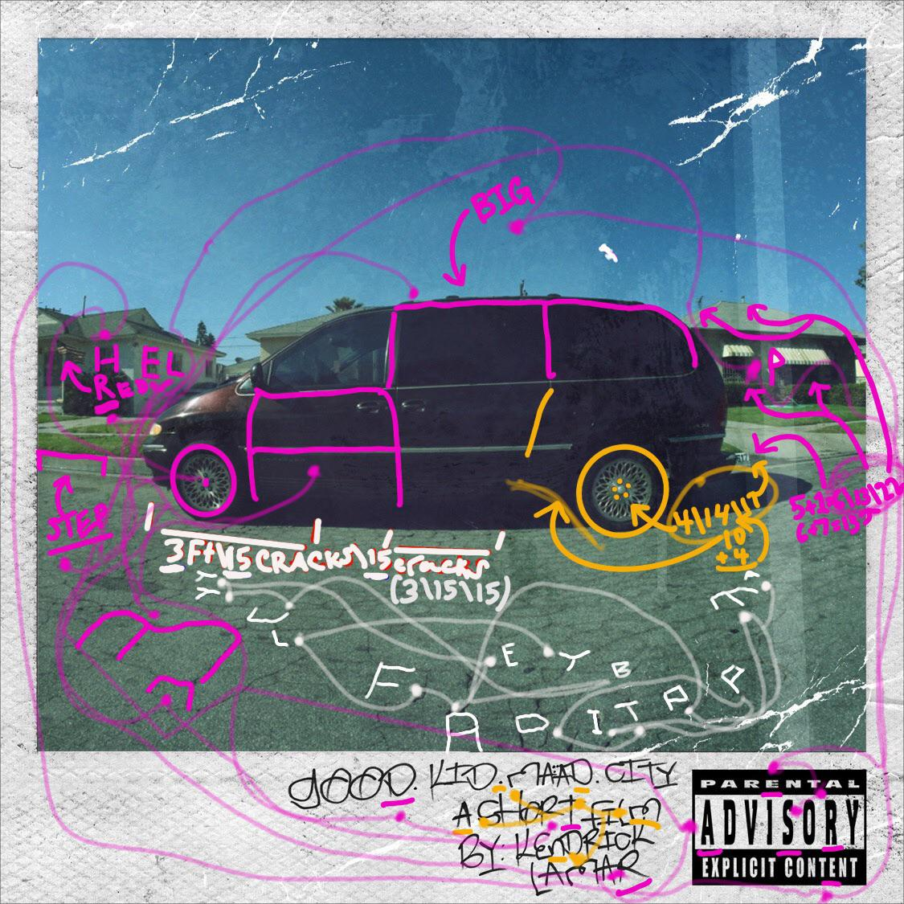
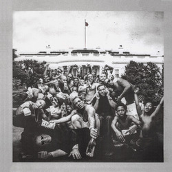

Section.80
(2011) Premier album studio, réflexion sur la jeunesse et la société américaine.

good kid, m.A.A.d city
(2012) Album autobiographique, un récit puissant de Compton.

To Pimp a Butterfly
(2015) Album expérimental jazz/rap, critique sociale et politique.

DAMN.
(2017) Album récompensé par un prix Pulitzer, hits comme “HUMBLE.”.
Mr. Morale & The Big Steppers
(2022) Double album introspectif, thèmes de thérapie et d’évolution.